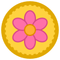

Die Frage steht auf Deutsch, das Wort schreibst du auf Spanisch — mit Akzenten. Die liegen auf der obersten Tastenreihe.
📋 zeigt alle Fragen auf einmal. 💡 verrät einen Buchstaben, kostet aber 3 Münzen.
–